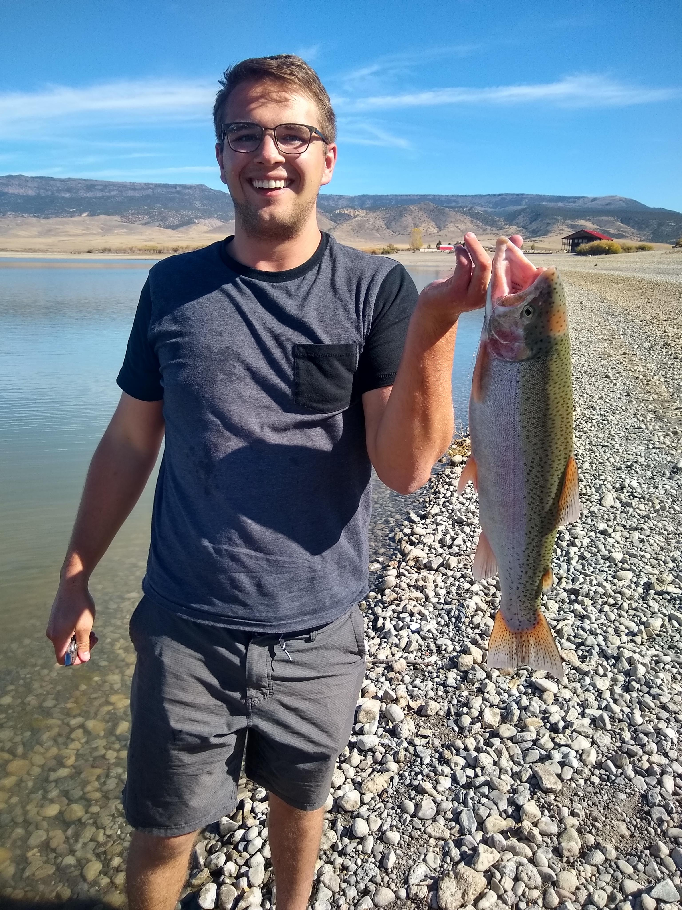
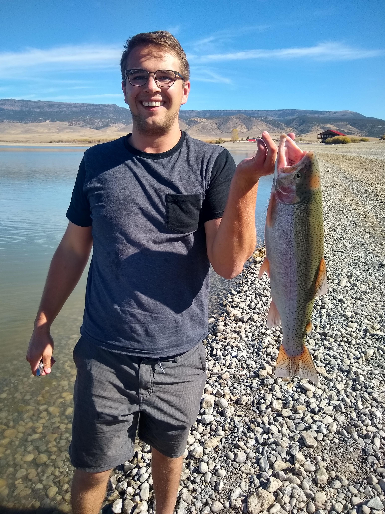

Brief Summary
Originally I am from Utah, there I have been to school for a year for business.
I have worked a government job, worked fast food, and worked an amusement park.
Once moving to Missouri, I have worked a retail job at Best Buy, worked a factory job, and now I am
working at Bass Pro until I can get a degree related job.
Previous Work Experience
Personally I have not had much work experience in any field working with computers.
I did work at Best Buy for over a year and a half working in the phone department.
What I did the most over there was troubleshoot why customer's phones didn't work.
Because I don't have much experience in this field of work I do plan on applying and working as an intern
for a few companies.
I work for Bass Pro Shops at the moment, and I am working to get into their IT or Computer Science branch at
their headquartes when I am a Sophmore or Junior.
Plans for and after school
During school I hope to transfer over to Bass Pro's computer science team.
That way by the time I graduate I have a year or two of that kind of work when I am graduated.
I hope to graduate with my bachelors in the year 2026 or the beginning of 2027.
Hobbies
Some hobbies that I enjoy doing is playing videogames, and spending time outside in nature. I love to hike
and fish.
I am originally from Utah, so I found lots of places to hike, camp, and fish.
When I am not doing these things I am usually spending time with my wife and my dog.
 
